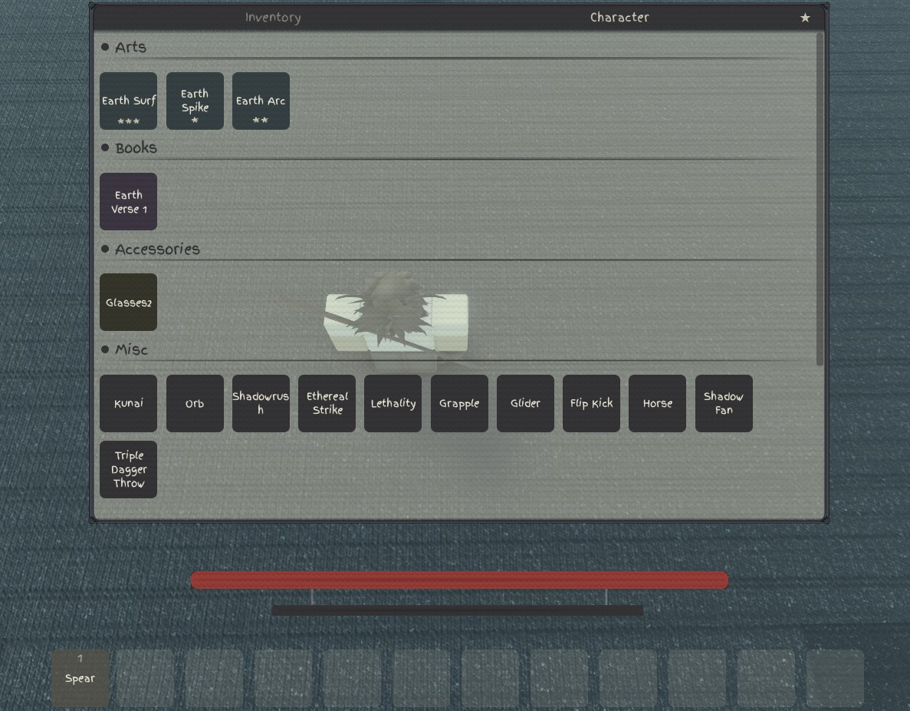
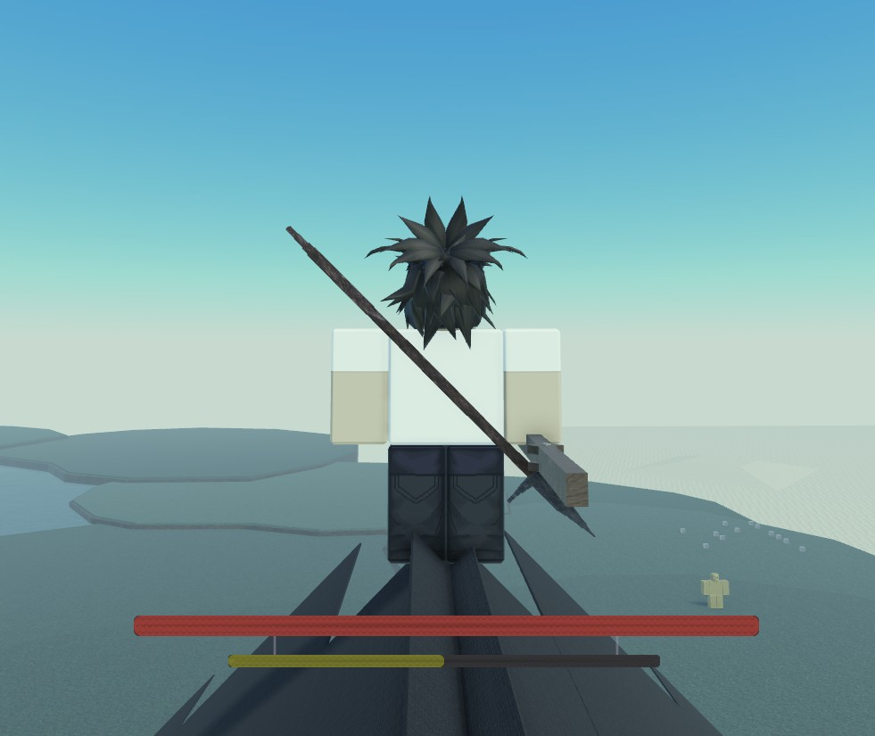
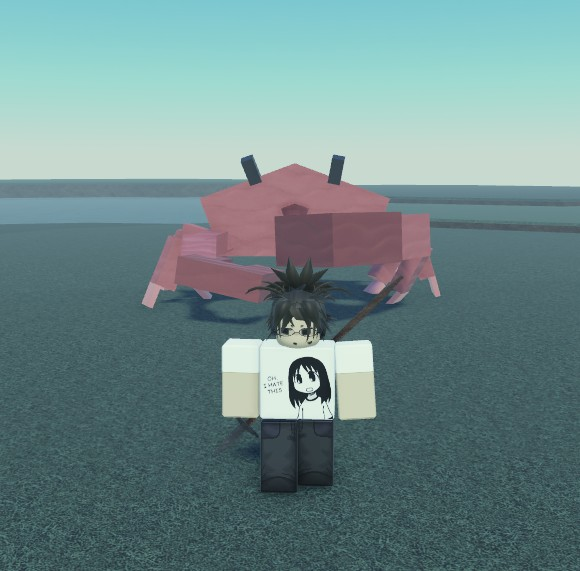

01Luau
Combat Systems
Server-authoritative combat with validation, clean modules and performance in mind.
Roblox / Luau / Systems
Roblox scripter
Passionate about building carefully scripted, optimized and organized systems that are difficult to exploit and easy for teams to maintain and expand on.
Recent
Server-authoritative combat with validation, clean modules and performance in mind.
Structured player data, safe updates and readable code designed for real gameplay.


Finding unnecessary work, reducing expensive loops and keeping systems lightweight.

Cleanly separated services and modules so features stay understandable as a project grows.
Roblox projects
What I care about
Important game logic stays server-side, with validation instead of trusting the client.
I avoid pointless work and look for sensible ways to keep scripts responsive under load.
Readable names, sensible modules and clear responsibilities make future edits much easier.
A little about me
Hey, I'm macsuk. I'm a Roblox scripter who enjoys the whole proccess of coding and optimizing scripts.
I care about code that is clean so you can understand it later, secure enough that the client isn't trusted with important decisions, and optimized so even mobile players can play on a smooth 60+ fps.
Whether it's a small feature or a larger system, I work with the same passion and try to keep everything under control.
--!strict
local Priorities = {}
Priorities.Security = "security"
Priorities.Organization = "organization"
Priorities.Performance = "performance"
Priorities.Readability = "readability"
function Priorities.GetSkillLevel()
return math.huge
end
-- ship clean systems.
return PrioritiesQuestions?
In my opinion my scripts are very good and I try to optimized them as much as possible, besides that i also make them easy to expand on and exploit proof while keeping it all organized.
This will be up to you to decide.If you state that you want no AI then i will not be using any Ai during my scripting. With that said i do have to add on that using AI can boost up the productivity rate which allows me to deliver faster. With that said, even if you decide that you want me to use AI, I will be only using it for simple tasks and never the backend scripting so there will be no vulnerability and issues.
You can add me on Discord using the username macsuk at the bottom of the page.
Want to work together?
Need a Roblox system scripted, cleaned up, secured or optimized? Add me on Discord and send me what you're working on.